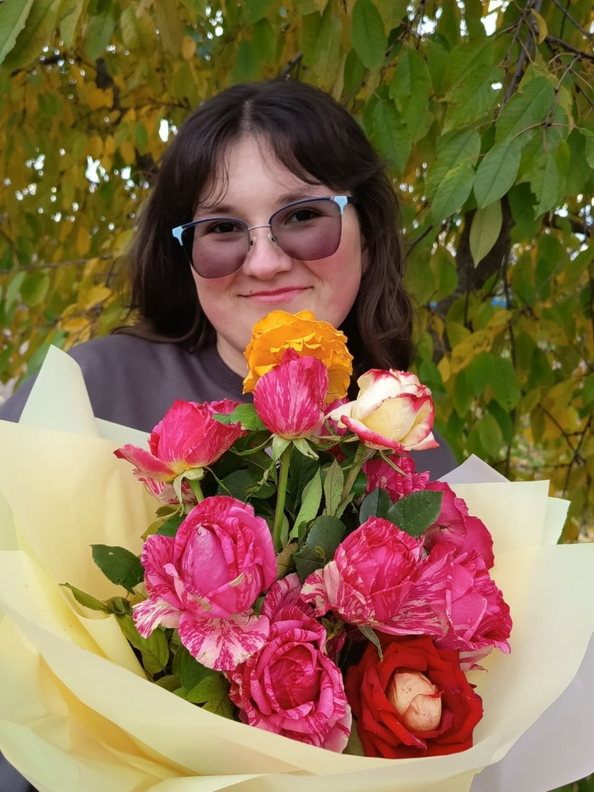

Трішки про автора 📸

Я не вважаю себе професійним фотографом, але фотографія для мене — це спосіб зупинити момент. Мені подобається знаходити красу в простих речах: у звичайній бджілці на квітці, у старій альтанці чи в тому, як змінюється колір неба за кілька хвилин до темряви.
Знімаю переважно на телефон, бо він завжди під рукою. Цей сайт я створила, щоб зібрати свої найкращі кадри в одному місці та поділитися цим затишком з іншими.